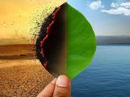

What is climate change?
Climate change, as the name suggests, refers to slow change in the climate of a certain place. It is related to global warming and causes a slow but steady rise in the globe’s temperature. It is a huge problem that can cause massive problems for us and the environment if we don’t act on it soon.